Lo nuevo en Domingo 3.03.1
Una actualización grande y gratuita para quien ya tiene Domingo. La app te avisa cuando está lista; descárgala e instálala encima. Tus archivos .mingo no se tocan.
Tu diario, impreso como un libro
Exporta el diario y todo lo de Vida a un PDF con diseño: elige uno de los estilos de Domingo, margen, portada, logo y páginas numeradas, y mira la vista previa antes de guardar. También en Word, Markdown, texto o un .mingo portátil.
- Incluye entradas, línea de vida, planes, frases, Cuaderno, ánimos, hábito y tablero de inspiración.
- Calendarios de ánimo, mapa de calor de escritura y hábitos como gráficos.
- Si tu diario tiene contraseña, la pide y te avisa que el archivo no queda protegido.
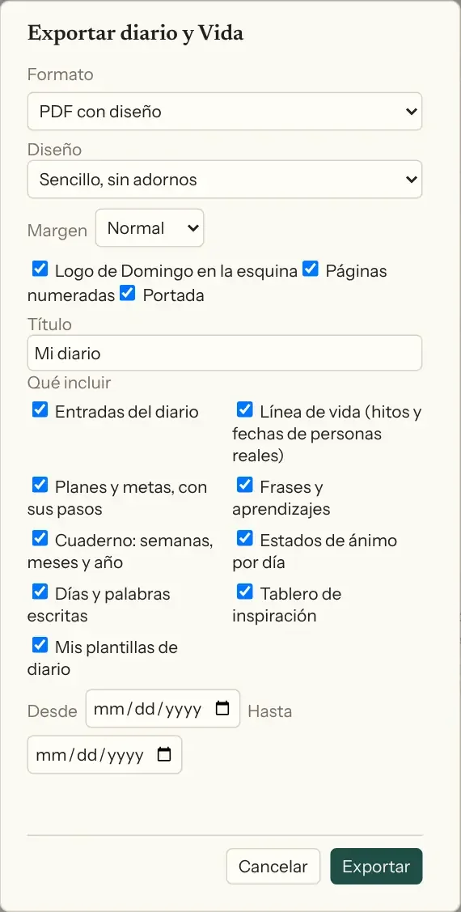
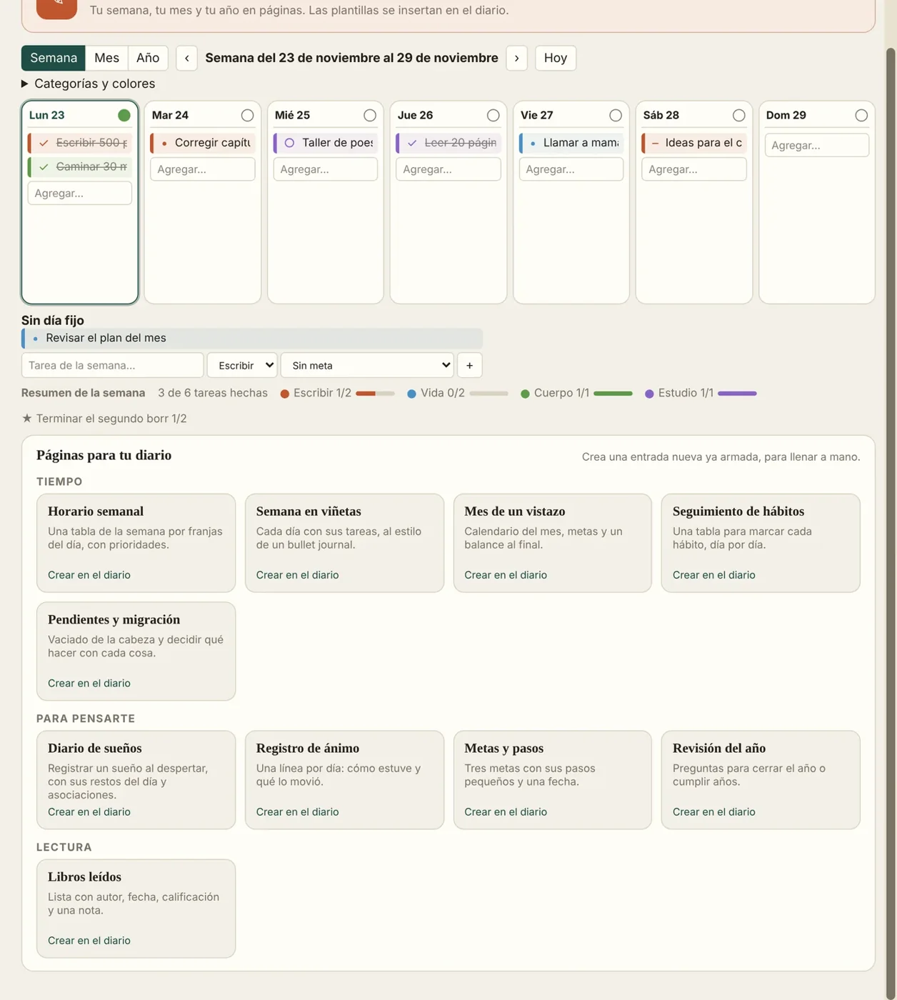
Escribe con tu música
El tablero de Inspiración tiene campos propios para cada tipo de tarjeta, y los lugares guardan su mapa. La tarjeta de Música toca YouTube, Spotify, audio directo o tus archivos, en un reproductor flotante junto al cronómetro que sigue sonando aunque cambies de vista.
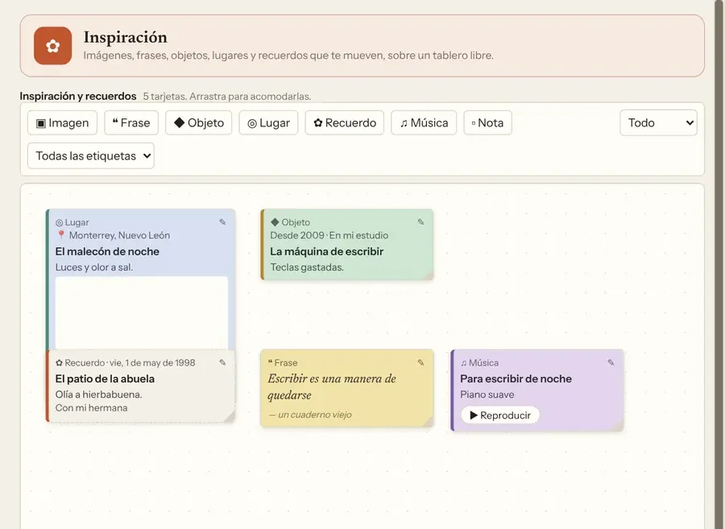
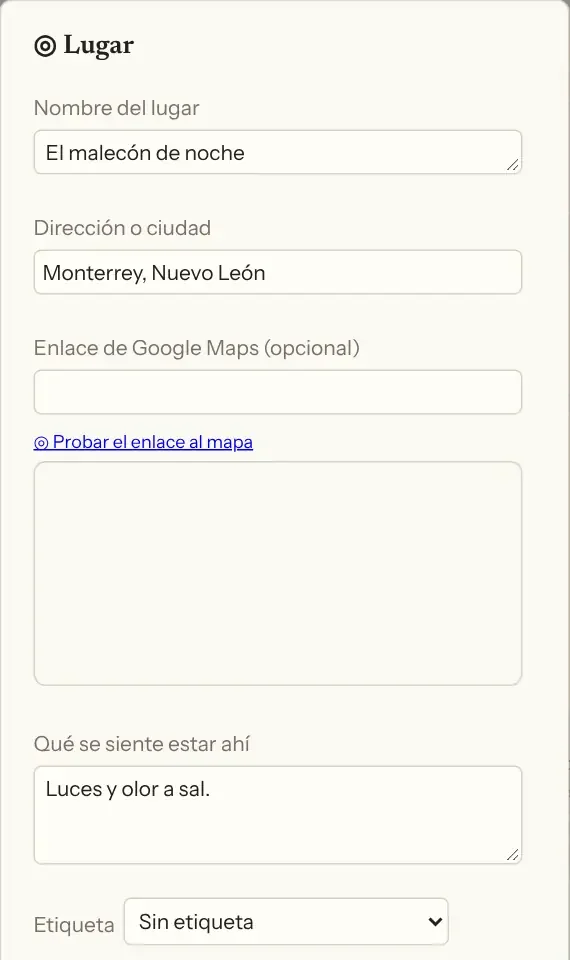
Corrige con color, y una casa para Misi
Colaborar suma una barra de cinco acciones, comentar, negrita, cursiva, tachar y cambiar, cada una con su color, en tus comentarios y en las revisiones de otras personas. Misi estrena escena en sus ajustes, con la comida a un lado, el juguete al otro y la torre al fondo, y nuevos juguetes: resorte, balón y hotdog.
- Lista de entrega rediseñada en Estudio.
- Talleres con Atrás, Reiniciar y Empezar de nuevo sin borrar tu manuscrito.
- Obras de muestra con todas las herramientas nuevas ya usadas.
- Guía Nube y rescate: tu .mingo en la nube, colaborar por turnos y recuperar el texto sin Domingo.
- Correcciones de estabilidad.
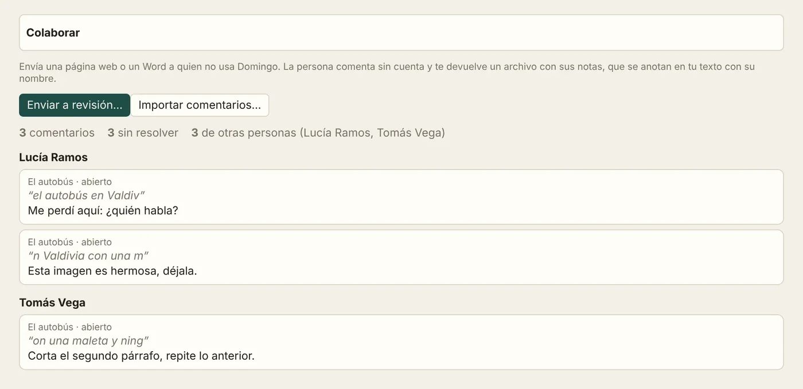
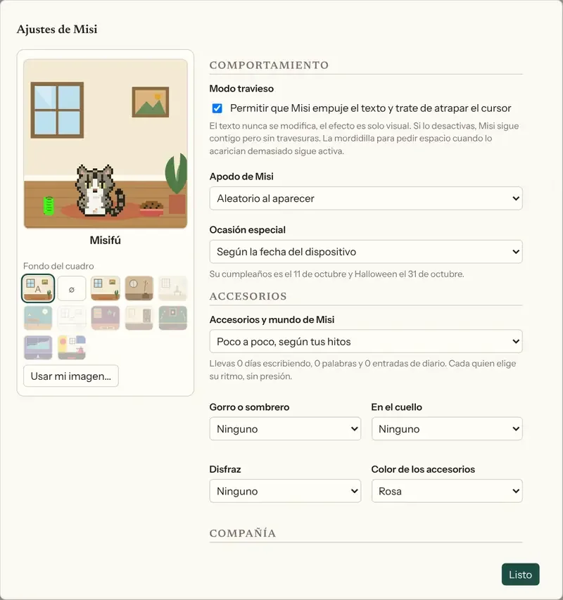
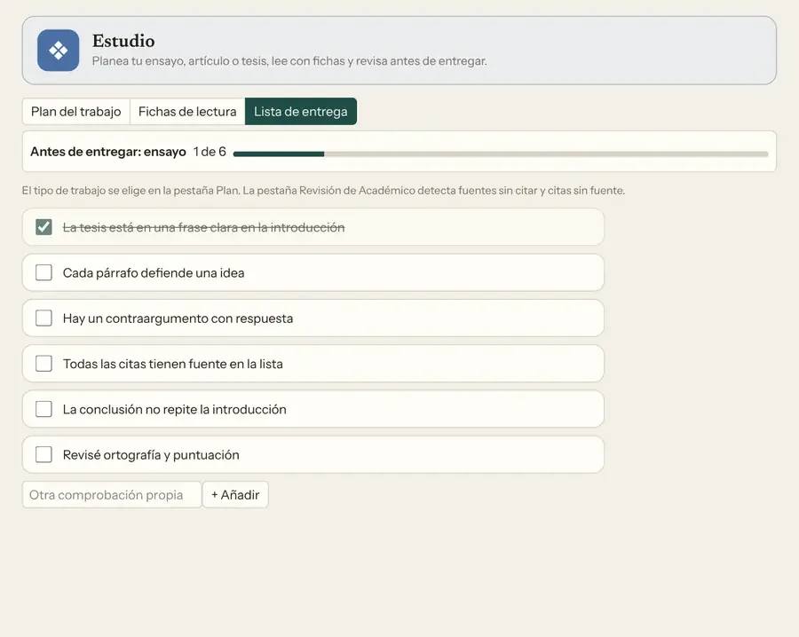
Aprende a escribir, no a usar la app
Los talleres tienen su propio botón, ✎ Talleres, junto a Ayuda. Un gato maestro con birrete explica cada formato y sus técnicas, y te propone ejercicios sobre tu propia vida. Cada taller crea un manuscrito que se conserva y recuerda dónde te quedaste.
- Seis talleres por formato: poema, microrrelato, carta, crónica personal, columna y diario.
- La historia corta en cinco sesiones, de una vivencia al cuento terminado.
- Plantillas de formato corto con guías de escritura dentro de cada documento.


Trae lo que ya escribiste
Abre un manuscrito de Word, PDF, texto, Markdown o Scrivener y Domingo propone capítulos, personajes, lugares, objetos, relaciones, escenas vinculadas y línea de tiempo. Tú revisas cada paso antes de crear nada.
- Lee también sinopsis, notas, estado y palabras clave de Scrivener 2 y 3.
- PDF escaneados con reconocimiento de texto sin conexión, en español.
- Trabaja en segundo plano, con una barra de avance.
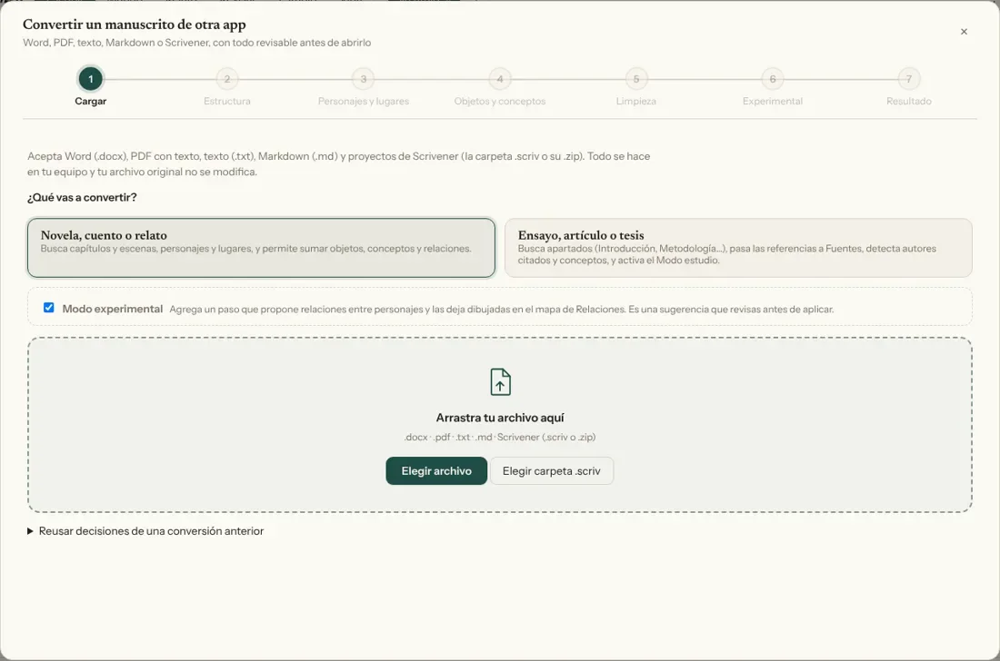
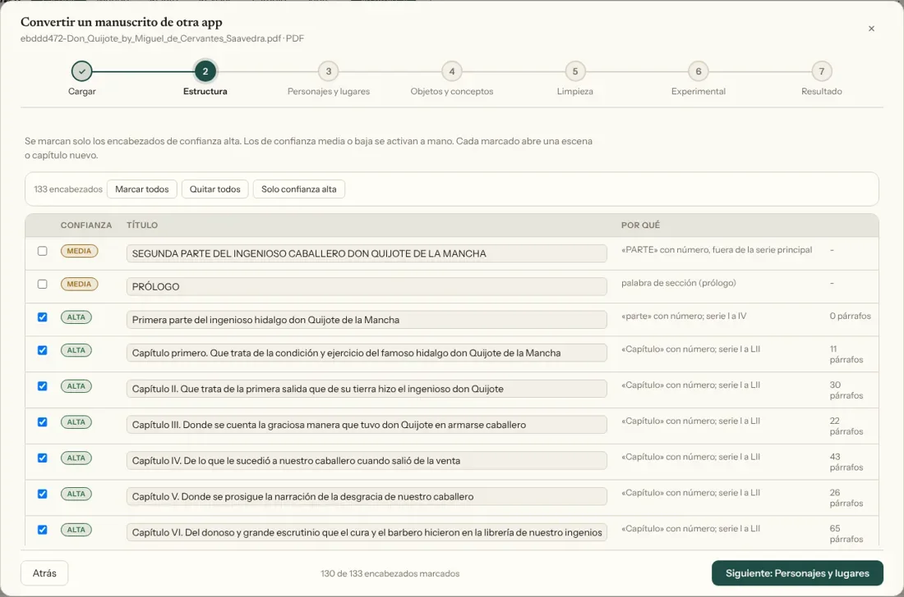
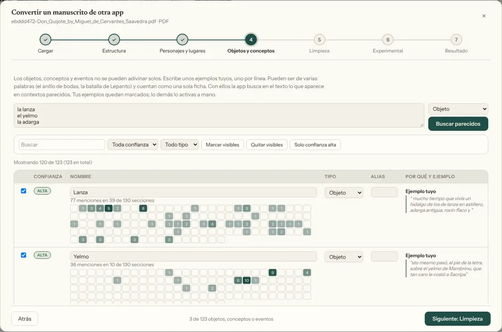
El Cuaderno y diez páginas para el diario
En Vida llega el Cuaderno: semana, mes y año al estilo bullet journal, con categorías de color, hábitos, libros leídos y año en píxeles. Y diez páginas listas para llenar dentro del diario.
- Diario de sueños, horario semanal, semana en viñetas, mes de un vistazo, hábitos, ánimo, libros leídos, metas, pendientes y revisión del año.
- Diecisiete estados de ánimo con su color, que puedes cambiar, ocultar o crear.
- Hábito con mapa de calor de ánimo; los días sin escribir ya se ven.


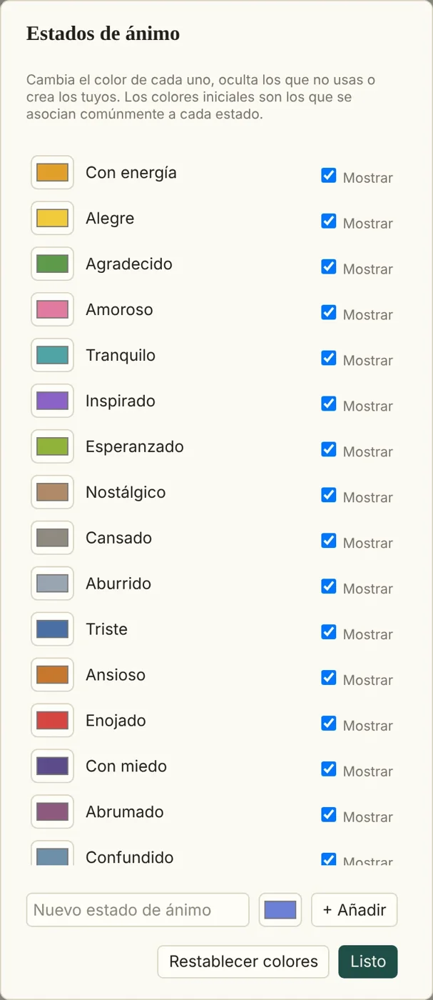
Tu tesis, de la pregunta a la entrega
La pestaña Plan y fichas ordena el trabajo académico completo, para ensayos, artículos y tesis.
- Plan del trabajo: pregunta, tesis, objetivos, palabras clave, meta de palabras y fases con fecha.
- Fichas de lectura por fuente, con resumen, citas textuales con página y lo que te aporta.
- Lista de entrega según el tipo de trabajo, con tus propias comprobaciones.
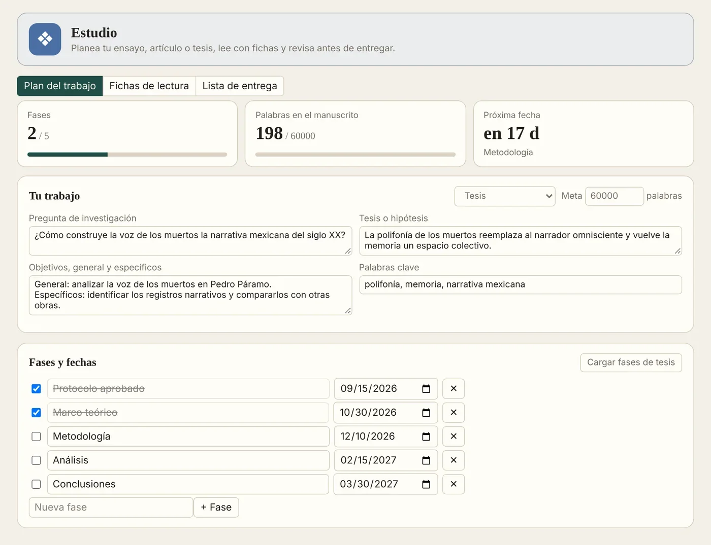

Del manuscrito a tu blog
Publicar entradas arma tu calendario editorial, y Preparar para blog deja cada texto listo para Substack, Medium, WordPress, Ghost o Blogger.
- Calendario en lista o por mes, con fecha y meta de cada entrada.
- Salida en HTML, Markdown o ePub por entrada.
- Subtítulo, descripción, etiquetas y pie, con vista previa y copia con formato.


Con otras personas, y en verso
Envía tu texto como página web o como Word a quien quieras. Comenta sin cuenta y sin instalar nada, y sus notas llegan a tu manuscrito. Para poesía, una pestaña nueva cuenta sílabas, mide versos y encuentra la rima.
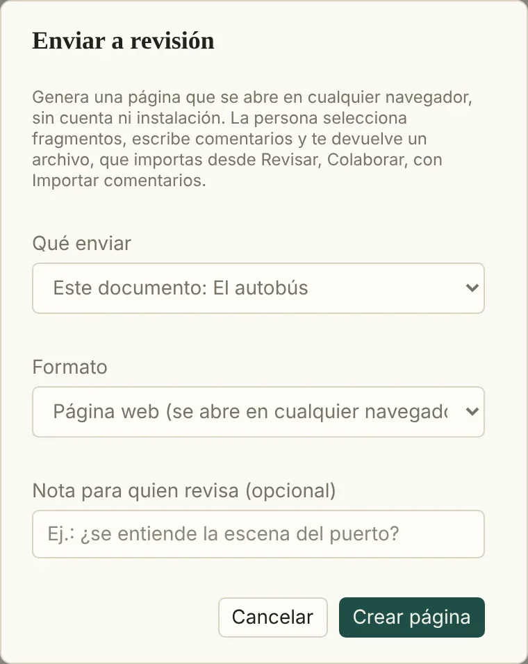

Detalles que se notan
Formatos cortos
Plantillas de cuento, poema, poemario, carta, microrrelato, crónica, columna y blog, con un interruptor para ocultar las herramientas de novela.
Subcarpetas
Hasta tres niveles en la Estructura, con arrastre y botones para meter y sacar.
Ajustes de Misi
En su propio menú, con vista previa, fondos por estilo o una imagen tuya.
Configuración
En cinco pestañas, con buscador fijo.
Metadatos del libro
Autor, año, editorial, ISBN e idioma en Word, HTML y Markdown.
Inspector ajustable
Ensánchalo o angóstalo a tu gusto. El menú Archivo ahora va en dos columnas.